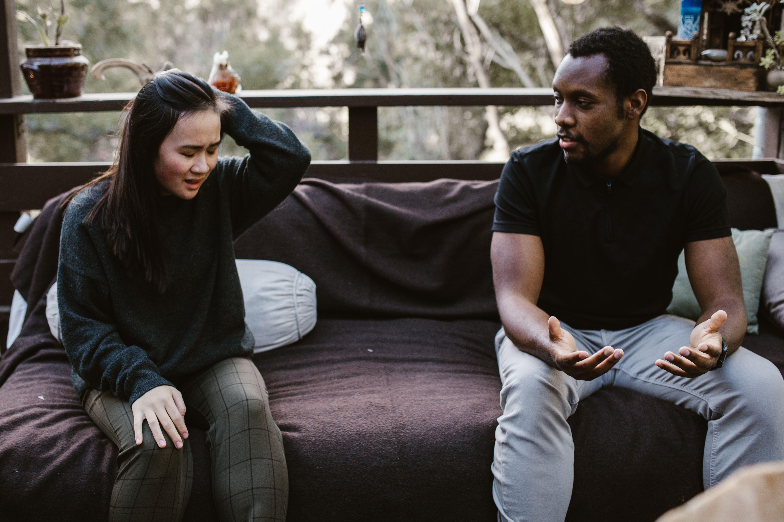

Most of us spend a huge part of our lives dealing with other people, yet very few of us are ever taught how to understand relationships properly. We learn how to work, how to study and how to earn money, but many of us enter friendships, families, workplaces and romantic relationships without really understanding trust, boundaries, communication or human behaviour.
I have seen how one relationship can change the direction of a person's life. The right person can encourage you when you are ready to give up. A good friend can tell you the truth when everybody else is simply agreeing with you. A supportive family member can give you strength during a difficult season. But the wrong relationship can also leave you constantly doubting yourself, wasting your time and losing confidence.
That is why I wanted to write about this subject from a practical point of view. I am not interested in making relationships sound perfect because real life is not perfect. People misunderstand each other. People make mistakes. People change. Sometimes we hurt people without intending to, and sometimes we remain in relationships long after we should have recognised that something is wrong.
For me, understanding relationships begins with understanding ourselves. Before asking why somebody behaves a certain way, I think it is worth asking what we are bringing into the relationship. Are we communicating clearly? Are we listening? Are we respecting boundaries? Are we expecting somebody to give us something that we have never learned to give ourselves?
Why understanding people matters
Human behaviour can be complicated. Two people can experience exactly the same situation and respond completely differently. One person may become quiet while another becomes angry. One may ask questions while another immediately assumes the worst. One person may forgive quickly while another needs a long time before trust returns.
I have learned that behaviour often has a story behind it. That does not mean every behaviour should be excused. Understanding why someone behaves badly is different from accepting the behaviour. I can understand that someone is angry because of what they experienced in the past without allowing that anger to become an excuse for disrespecting me.
This distinction has helped me think about relationships differently. Compassion matters, but boundaries matter too. You can understand someone and still say no. You can forgive someone and still decide that you need distance. You can love someone and still recognise that being around them is damaging your peace.
Start by understanding yourself
Before trying to understand everybody else, I would start with myself. What makes me angry? What makes me insecure? What kind of criticism do I struggle to accept? Do I become defensive when someone points out a weakness? Do I avoid difficult conversations because I am afraid of losing people?
These questions are uncomfortable, but they are useful. If I do not understand my own reactions, I can easily blame another person for every problem. I might say that someone is disrespectful when perhaps I misunderstood what they meant. I might call somebody uncaring when I have never clearly explained what I need.
Self-awareness does not mean blaming yourself for everything. It means being honest enough to recognise your part in a situation. If I make a mistake, I should be able to say so. If I overreact, I should be able to admit it. If I need to change something about myself, I should not wait for somebody else to force me to change.
Choose your friends carefully
Friendship is one of the most important relationships in life, and I do not think we should choose friends simply because we have known someone for a long time. Time matters, but character matters more.
A good friend does not have to agree with everything I say. In fact, I would rather have someone who can respectfully tell me when I am making a bad decision than someone who supports every mistake because they are afraid of upsetting me.
I also pay attention to how I feel after spending time with people. Not every difficult conversation is a bad sign. Sometimes a good friend challenges me. But there is a difference between being challenged and being constantly humiliated, manipulated or discouraged.
Avoid friendships where respect only exists when you are useful. If somebody only calls when they need money, a favour, attention or access to something you have, pay attention to that pattern. A friendship should not feel like a transaction every time you meet.
I also believe we should become the kind of friend we want to have. If I want loyalty, I should be loyal. If I want honesty, I should be honest. If I expect someone to listen to me, I should also learn to listen without immediately turning every conversation back to myself.
Trust is built through small actions
People sometimes think trust is created by making one big promise. I see it differently. Trust is usually built through many small actions repeated over time.
If I say I will call, I should try to call. If I make a mistake, I should admit it instead of inventing excuses. If someone tells me something privately, I should not immediately repeat it to another person for entertainment.
These small choices tell people whether our words have value. Someone may forgive one broken promise, but repeated inconsistency slowly changes how they see us.
Trust can also be rebuilt, but I would not expect it to return simply because I said sorry. An apology is a beginning. Consistent behaviour is what gives the apology meaning.
Learn to communicate without attacking
One of the biggest problems I see in relationships is that people sometimes communicate only after they have become extremely angry. By then, a simple issue can become a collection of old arguments.
I believe it is better to speak while the problem is still manageable. If something bothers me, I can explain it without insulting the other person. There is a major difference between saying, “I felt ignored when that happened,” and saying, “You never care about anybody.”
The first statement explains a feeling and a situation. The second attacks the person's entire character.
Avoid bringing every old mistake into a new disagreement. If the issue is about today, deal with today. If there is another serious problem that needs discussion, choose another time for it.
I also think listening is half of communication. Listening does not mean agreeing with everything. It means giving the other person enough attention to understand what they are actually saying before preparing your response.

Set boundaries without feeling guilty
Boundaries are not walls designed to keep everybody away. They are guidelines that explain what you are willing and unwilling to accept.
I have learned that saying no does not automatically make someone selfish. Sometimes saying no is necessary because you have limited time, limited money or limited emotional energy.
If someone repeatedly borrows money and never repays it, I do not have to continue lending simply because I am afraid they will be offended. If someone constantly insults me and then calls it a joke, I can tell them that I do not accept that treatment.
Avoid explaining your boundaries for an hour. A simple and respectful explanation is often enough. You do not need permission from everybody before making a decision that protects your time and values.
Do not confuse kindness with weakness
I believe kindness is a strength, but kindness without boundaries can become a problem. There are people who will continue taking if you never tell them where the limit is.
Being kind does not mean paying every person's bill. It does not mean agreeing to every request. It does not mean allowing somebody to disrespect you because you want to appear peaceful.
You can be generous and still have limits. You can help somebody without becoming responsible for their entire life. You can forgive someone without giving them unlimited opportunities to hurt you.
Understand that people change
One of the hardest things about relationships is accepting that people do not remain exactly as they were when we first met them.
A friend may move to another city. A family member may develop different priorities. A partner may grow in a different direction. You may change too.
Sometimes we become frustrated because we are trying to maintain an old version of a relationship that no longer fits our lives. I think it is healthier to recognise change and decide what the relationship can realistically become.
Change does not always mean the relationship must end. Sometimes it means the relationship needs new expectations. Two friends who used to talk every day may eventually talk once a week but still care deeply about each other.
How to deal with difficult people
Difficult people will exist wherever we go. You cannot build a life where everybody behaves exactly the way you want.
When I deal with a difficult person, I try not to give them control over my emotions. If somebody is looking for an argument, reacting immediately may give them exactly what they wanted.
Sometimes the strongest response is a calm one. Ask what the actual problem is. Explain your position once. If the conversation becomes disrespectful, step away and return to it later if necessary.
Avoid trying to win every argument. Some arguments have no useful prize at the end. You can prove that you are right and still damage the relationship.
At the same time, do not become so focused on keeping peace that you accept everything. Peace without self-respect is not a healthy form of peace.
Learn how to handle rejection
Rejection hurts because it can make us question our value. But I have learned that another person's decision does not automatically define who I am.
Someone may reject a friendship, relationship, job application or invitation for reasons that have very little to do with my worth. People have different preferences, circumstances and priorities.
If I am rejected, I can feel disappointed without turning that disappointment into hatred. I can ask whether there is something I should learn, then continue with my life.
Avoid begging someone to choose you. If a relationship requires you to repeatedly convince another person that you deserve basic respect, something is already wrong.
Love should not require losing yourself
Romantic relationships can be beautiful, but they can also become confusing when people believe love means giving up their identity.
I think two people can love each other and still have individual interests, friendships, goals and personal space. Being in a relationship should not mean that one person controls everything the other person does.
Respect should remain present even during disagreement. If somebody constantly monitors your phone, isolates you from everyone you know or uses fear to control your decisions, that should not be dismissed simply because the relationship contains affection.
Healthy love should allow two people to grow while still caring about each other.
Family relationships can be complicated
Family can be one of the greatest sources of support, but family relationships can also be difficult. We sometimes assume that because someone is related to us, we must automatically agree with everything they do.
I do not believe that. Respecting family does not require abandoning your judgement.
Sometimes family members have different expectations about money, career choices, relationships or lifestyle. The goal should not always be to make everybody agree. Sometimes the goal is to communicate respectfully while accepting that you are responsible for your own decisions.
If a family relationship becomes seriously harmful, boundaries may still be necessary. Being related does not remove the need for respect.
Do not make every disagreement personal
Disagreement is normal. In fact, I think healthy relationships need room for disagreement.
Two intelligent people can look at the same situation and reach different conclusions. That does not automatically mean one of them is stupid, dishonest or disrespectful.
Avoid turning every disagreement into a judgement about someone's character. Discuss the issue instead of attacking the person.
I have also learned that sometimes I need to say, “I may be wrong.” Those words can be difficult, but they can save a relationship from unnecessary conflict.
Watch patterns, not just promises
One of the most useful lessons I have learned about people is to pay attention to patterns. Anyone can make a promise. What matters is what happens repeatedly.
If someone says they respect you but repeatedly embarrasses you, the behaviour matters. If someone says they care but only appears when they need something, the pattern matters.
This does not mean we should judge people from one mistake. Everybody makes mistakes. The question is what happens after the mistake. Do they take responsibility? Do they try to repair the damage? Do they change their behaviour?
Do not gossip your way into friendships
Gossip can make people feel close very quickly because sharing somebody else's private information creates a temporary feeling of belonging. But I do not think it creates strong friendships.
If someone regularly tells me private information about other people, I should remember that they may eventually tell other people my private information too.
I would rather build friendships around shared interests, honest conversations, humour, goals and mutual respect than around discussing somebody who is not present.
Be careful with people who only respect power
Some people are respectful only when they believe they need something from you. When your money, position or usefulness disappears, their behaviour changes.
I think this is one reason we should observe how people treat those who cannot offer them anything. Watch how someone speaks to a waiter, cleaner, junior employee, stranger or someone who has made a mistake.
Character is often easier to see when there is nothing to gain.
Learn to apologise properly
A real apology should not be a competition over who is more guilty. If I know I hurt someone, I should be able to acknowledge it.
Saying “I'm sorry you feel that way” can sometimes sound like I am avoiding responsibility. If I actually did something wrong, I should say what I did, acknowledge the effect and try to correct it.
At the same time, I should not apologise for simply having a reasonable boundary. There is a difference between apologising for hurting somebody and apologising because somebody became angry when I said no.
Do not keep score in every relationship
Relationships should involve mutual effort, but I do not think healthy relationships require us to keep a calculator in our heads.
Sometimes I will give more. Another time the other person may carry more of the responsibility. Life has difficult seasons, and good relationships make room for that.
The problem begins when one person permanently gives while the other permanently takes and sees nothing wrong with it.
Protect your attention
The people around us can influence what we think about every day. If every conversation is negative, every plan is criticised and every ambition is mocked, that environment can slowly affect how we see ourselves.
I am not saying we should surround ourselves only with people who praise us. We need honest people. But honesty should help us improve rather than simply make us feel small.
I would rather have someone say, “You can do better here,” than someone who says, “You will never succeed.”
When should you walk away?
This is one of the hardest questions in relationships because walking away can feel like failure. Sometimes it is not failure. Sometimes it is recognition.
If you have communicated clearly, set reasonable boundaries and given opportunities for change, but the same harmful pattern continues, you may need to create distance.
Avoid staying simply because you are afraid of starting again. Familiar pain can still be pain.
Walking away should not always be dramatic. Sometimes it means talking less, sharing less personal information, declining certain invitations or simply accepting that the relationship will no longer have the same place in your life.
Do not expect people to read your mind
I have noticed that many relationship problems begin with expectations that were never communicated.
We expect someone to know what we want, then become angry when they do not know. We expect a friend to understand why we disappeared. We expect a partner to know why we are upset without explaining what happened.
People are not mind readers. If something matters, communicate it clearly.
This does not guarantee that the other person will respond exactly as we want, but at least they have a fair opportunity to understand us.
Respect yourself enough to change
Sometimes we spend so much time complaining about other people's behaviour that we forget to examine our own.
If I repeatedly choose the same kind of unhealthy relationship, I need to ask myself why. If I keep losing good friendships because I refuse to communicate, I need to work on communication. If people regularly tell me that I do not listen, perhaps I should stop defending myself long enough to consider whether they have a point.
Personal growth and relationships are connected. The better I understand myself, the better I can relate to other people.
Give people room to be human
Nobody gets everything right. There are days when I am tired, impatient, distracted or simply wrong. Other people have those days too.
If we expect perfection from everyone around us, we will constantly be disappointed.
This does not mean ignoring serious behaviour. It means learning the difference between a human mistake and a repeated pattern that someone refuses to correct.
I think strong relationships require some patience. They also require accountability. Both can exist at the same time.
What I would do when a relationship becomes difficult
If I found myself in a difficult relationship today, I would first slow down before reacting. I would try to understand exactly what the problem is instead of describing the entire relationship as bad.
Then I would ask myself what part I contributed. After that, I would communicate clearly. If the relationship mattered, I would give the other person an opportunity to explain their side.
If we both wanted to improve things, I would focus on specific changes rather than making vague promises. If the problem was about trust, we would work on consistency. If it was communication, we would change how we talk. If it was boundaries, I would make those boundaries clear.
But if the same harmful behaviour continued after honest communication and reasonable opportunities to change, I would stop pretending that patience means accepting everything.
The people around you influence your direction
I do not believe another person can completely determine my future, but I do believe relationships influence our choices.
If the people around me are constantly wasting money, I may find it harder to save. If everyone around me treats education as pointless, I may stop learning. If the people around me respect hard work, honesty and discipline, those qualities become easier to practise.
That is why I think choosing your environment is part of personal growth.
Build relationships that allow honesty
The best relationships are not necessarily the ones where everyone is always happy. They are often the relationships where people can tell the truth without destroying each other.
I want people around me who can tell me when I am wrong. I also want to be the kind of person who can receive that truth without immediately becoming defensive.
Honesty without kindness can become cruelty. Kindness without honesty can become avoidance. I think healthy relationships need both.
My final thoughts on relationships and human behaviour
The older I become, the more I understand that relationships are not about finding perfect people. They are about learning how to deal with real people, including ourselves.
Some people will stay in your life for decades. Some will stay for only a short season. Some will teach you through their kindness, while others will teach you through disappointment.
I do not think every relationship needs to last forever to have been meaningful.
What matters is what we learn from the people we meet and how we use those lessons to become wiser.
If you want better relationships, start with what you can control. Communicate clearly. Listen properly. Keep your promises. Apologise when you are wrong. Set boundaries when necessary. Stop chasing people who repeatedly show that they do not value your presence. Give good people room to make ordinary mistakes. Do not confuse forgiveness with unlimited access to your life.
Most importantly, treat people with the kind of respect you hope to receive. You cannot control how everybody responds to your character, but you can decide what kind of person you will be.
That, to me, is one of the most important parts of understanding human behaviour. We are not only studying other people. We are also learning about ourselves.